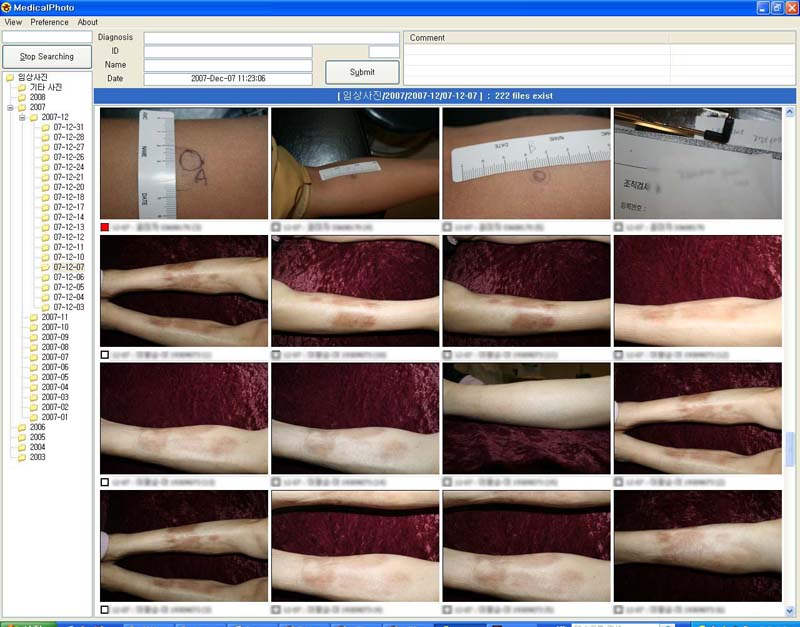

What is MedicalPhoto ?
MedicalPhoto 는 비영리적(non-commercial)인 의료용 사진 관리 프로그램입니다. 피부과 의사를 위해 개발되었으나 사진 촬영이 많은 성형외과, 치과 등에서도 사용하고 있습니다.
이 프로그램은 2007년 아산병원 피부과에서 사용할 목적으로 개발되었습니다. 당시 피부과에서는 매일 200~300 여장의 임상사진을 찍고 있었는데 이를 쉽고 효율적으로 관리하기 위해 개발하였습니다. 아산병원 피부과에는 다년간에 축적된 임상사진의 개수가 많아져서 Windows 에서 하나의 사진을 찾기 위해서 수분이 소요되었고 사진 정리하는 작업 역시 단순 반복 작업의 연속이었습니다.
MedicalPhoto 는 내장된 데이터베이스를 기반으로 사진이 많더라도 1초 내에 찾을 수 있습니다. ICD-10 진단명을 내장하고 있고 피부과 Textbook 에 있는 대부분의 진단명을 추가로 내장하고 있습니다. 혹시 없는 진단명이나 시술명 등은 예약어로 정의하고 사진에 태그하는 것 역시 가능합니다. MedicalPhoto 는 다중 모니터를 지원하며 2~3 개의 모니터를 가지고 있다면 한 개의 모니터에 Before 사진을, 다른 모니터에는 After 사진의 띄워서 비교하는 것이 가능합니다. MedicalPhoto 는 서버-클라이언트 구조로 되어 있으며, 진료실에 다수의 컴퓨터가 있는 경우 각각의 컴퓨터에 클라이언트를 설치하여 진료실 어느 곳에서도 사진을 접근할 수 있습니다. 이 프로그램은 현재 영어와 한국어 메뉴를 지원하고 있습니다.
